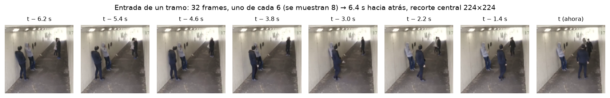
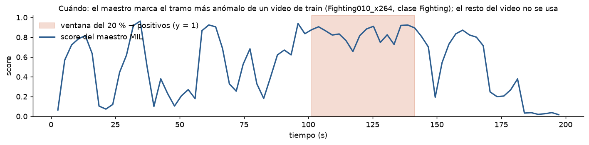
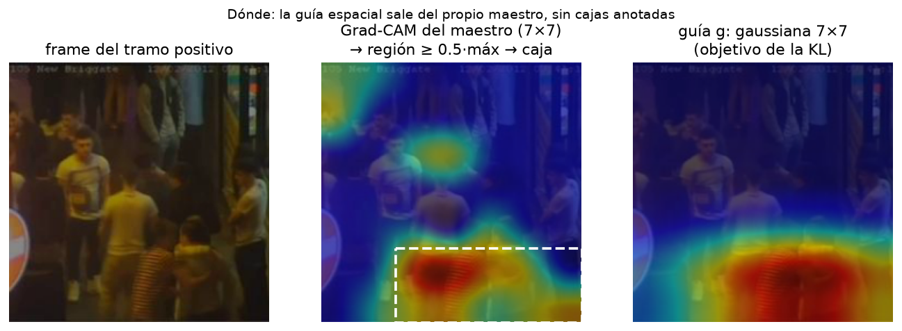
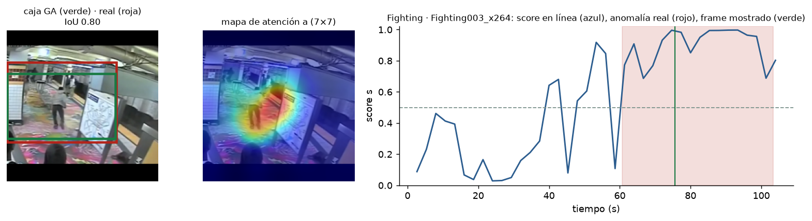
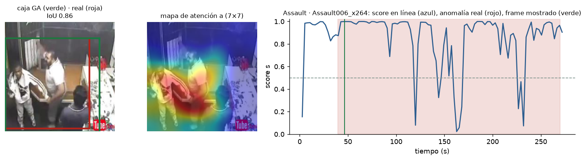
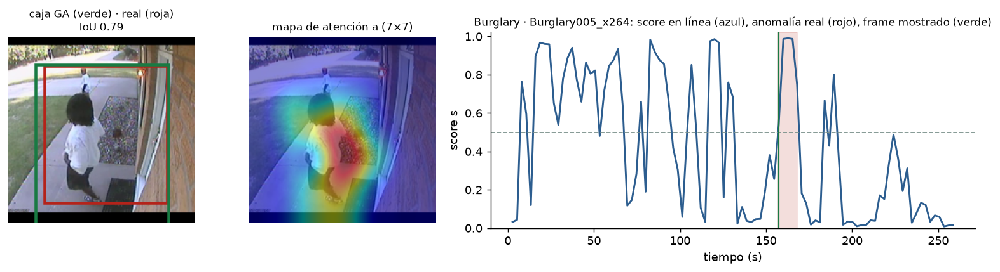
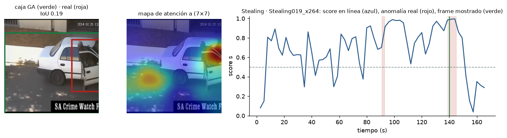

← Back to research
Doctoral research · Paper in preparation
GA-VAD
Online Weakly Supervised Detection, Localization and Recognition of Video Anomalies on Edge Devices
86.8AUC on UCF-Crime (Pro, 3 seeds)
+11.8TIoU over a trivial box (Edge)
2.0 Mparameters · 10.3 ms per clip (Edge)
~30 kparameters in the attention head
Three questions, one forward pass
Where
What
GA-VAD-Edge on UCF-Crime test videos
From the camera to “when, where and what”
-
1
Last 6.4 s
-
2
Video backbone
-
3
Feature map 7 × 7
-
4
Guided attention head
-
5
Three answers

| Block | GA-VAD-Edge | GA-VAD-Pro |
|---|---|---|
| Backbone | X3D-M (Kinetics-400), frozen · 2.0 M | UniFormer-B 32×4 (K600), last stage fine-tuned · 49.9 M |
| Feature map F | 192 × 7 × 7 | 512 × 7 × 7 |
| Attention | BatchNorm → 1×1 conv → softmax over 49 cells → weighted pooling Σ aᵢ·Fᵢ | |
| Detection | Linear(C → 128) + LayerNorm → MLP 128 → 32 → 1 → σ | |
| Classification | 128 → K with sigmoids (13 classes on UCF-Crime, 6 multi-label on XD-Violence) | |
| Box | Connected region of the attention map around its peak, projected to the full frame | |
| Head parameters | 29,698 | 71,618 |
| Latency per clip | 10.3 ms (RTX 4060 Ti, FP16) | 78.8 ms |
Learning to look without a single box
- Teacher
- Three pseudo-labels
- Guided head
- Pro only
L = BCE(s, y) + λ · KL(a ‖ g) + μ · Σk BCE(pk, ck)λ = 0.5 (KL only on positives)


Detection and localization
| Metric | GA-VAD-Edge | GA-VAD-Pro | Reference |
|---|---|---|---|
| Frame-level AUC | 82.08 ± 0.10 | 86.76 ± 0.33 | REWARD-E2E 86.94 |
| Frame-level AP | 24.4 | 33.7 | — |
| TIoU, full frame, no τ | 38.88 ± 0.19 | 27.5 | “Where and When” 40.51 (offline) |
| TIoU, full frame, τ = 0.5 | 36.25 ± 0.11 | 25.6 | STPrompt 23.90 · VadCLIP 22.05 |
| Gain over a trivial box | +11.8 | +1.2 | without guidance: +0.7 |
| Parameters (backbone + head) | 2.03 M | 50.0 M | — |
Backbone comparison (same protocol, 4 seeds)
| Backbone | Params | ms / clip | UCF AUC | TIoU | Gain vs trivial box | XD-Violence AP |
|---|---|---|---|---|---|---|
| X3D-M | 2.0 M | 10.3 | 82.08 ± 0.10 | 38.88 | +11.8 | 70.66 |
| I3D | 12.7 M | 20.7 | 80.36 ± 0.50 | 36.35 | +8.5 | 66.59 |
| VideoMAE-B | 86.2 M | 30.8 | 81.47 ± 0.23 | 27.90 | +1.2 | 70.83 |
| UniFormer-B | 49.9 M | 78.8 | 85.02 ± 0.44 | 27.54 | +1.2 | 71.66 |
How the attention behaves on test videos




Running on a Jetson Orin NX
| Precision | Calibration | ms / window | Speed-up | Peak VRAM | Max score, fight |
|---|---|---|---|---|---|
| FP32 | — | 985 | 1.0× | 275 MB | 0.976 |
| INT8 | 61 windows | 335 | 2.9× | 186 MB | 0.273 |
| FP16 | not needed | 353 | 2.8× | 186 MB | 0.975 |